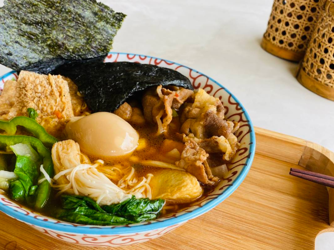
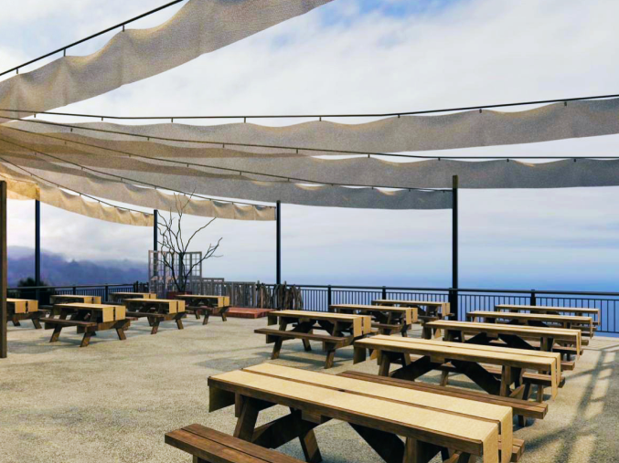
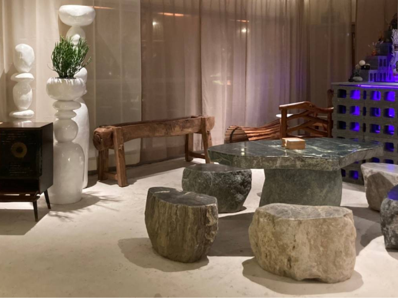
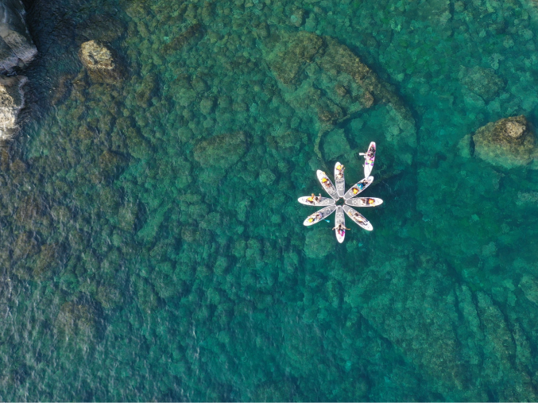

望海巷

現今的望海巷坐擁360度山海美景看的到基隆嶼及太平洋天然景色也串聯深澳支線八斗子站、深澳鐵道自行車與潮境公園
潮境智能海洋館、象鼻岩、望幽谷，海天一色，一望無際的景色
水上活動有立槳SUP、浮潛賞魚訪沉船，聽著潮起潮落浪濤聲，迎著海風徐徐吹來
多家著名美食餐飲的入駐：小李海鮮麵，海有個地方，海有BBQ，來個熱呼呼的美食冰涼飲品、調酒讓一天愉悅疲累的身心得到滿足!!
旁邊還有海科智能館、基隆最棒室內親子景點、露營區、停車場、市集，天啊!!!
最新打卡景點，望海巷跨海景觀橋，吃的喝的玩得逛的通通都有。
-

小李海鮮麵
-

海有BBQ
-

海有個地方
望海店 -

寶島野孩子
SUP海上探索

小李海鮮麵
八斗子海景餐廳【小李海鮮麵】望海巷跨海景觀橋旁海景餐廳/創意客製化海鮮麵/看海吃泡麵/滿百送蛋/一整面泡麵牆任你選。
全台最美的跨海大橋旁新開一間小李海鮮麵，有半戶外及戶外海景座位區，在台就可以享受出國渡假的南洋風情，可以一邊看海一邊吃泡麵超愜意的，這裡就像一間小型超巿一樣，在這裡可以一邊逛超巿一邊挑選自己喜歡的泡麵、菜色和海鮮。

海有BBQ
位於八斗子望海巷園區內，是國內少數直面海景第一排的景觀餐廳，餐廳採戶外開放式經營，讓遊客享受最美麗的海灣，因為獨特的天氣關係，每年這裡只能經營7個月，夏季開始提供燒烤串及生啤酒暢飲，搭配海風及海景成為了濱海地區最美麗的景觀燒烤餐廳。

海有個地方
望海店
位於八斗子望海巷園區內，是國內少數直面海景第一排的景觀餐廳，餐廳採戶外開放式經營，讓遊客享受最美麗的海灣，因為獨特的天氣關係，每年這裡只能經營7個月，夏季開始提供燒烤串及生啤酒暢飲，搭配海風及海景成為了濱海地區最美麗的景觀燒烤餐廳。
